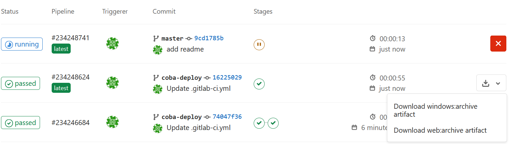
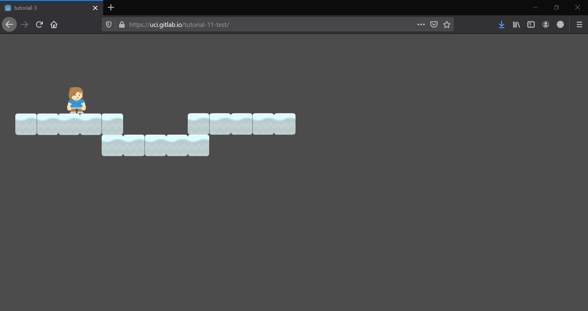

Tutorial 11 - Continuous Integration & Deployment
Peringatan: tutorial 11 bersifat opsional.
Halooo, selamat datang di tutorial 11 kuliah Game Development. Pada tutorial kali ini, kamu akan mempelajari cara untuk membuat CI dan CD untuk melakukan otomasi integrasi dan deployment dari proyek Godot kalian. ita sebagai tim pengembang tidak lagi perlu untuk secara manual mengexport proyek Godot yang sedang dikerjakan menjadi sebuah executable file. Kita juga bisa mengefisiensikan waktu untuk pengunggah executeable file tersebut ke sebuah marketplace seperti itch.io.
Pengantar
Sebagaimana yang kita ketahui, sebagai sebuah tim pengembang kita akan sangat terbantu dengan keberadaan CI dan CD ini. Metode ini memungkinkan proyek yang kita kerjakan bisa dengan otomatis terintegrasi dengan proyek yang saat ini sudah ada. Terlebih lagi metode ini dapat melakukan deployment secara otomatis saat kita melakukan merge ke suatu branch production, yang biasanya akan terjadi sebuah deployment ke sebuah environment baru. Untuk mengetahui lebih lanjut mengenai apa itu CI dan CD kalian bisa mengakses link ini.
Sebenarnya banyak cara untuk membuat CI dan CD pada proyek Godot kalian. Pada tutorial kali ini kita akan membuat GitLab CI yang akan menggunakan sebuah Docker Image dimana dokumentasi lengkapnya dapat diakses pada link GitLab ini. Lalu untuk cara export proyek Godot kalian menggunakan Command Line bisa diakses pada dokumentasi Godot ini.
Auto build to Gitlab artifact
Pertama adalah bagaimana kita membuild atau mengexport otomatis proyek ke bentuk executable untuk berbagai jenis sistem operasi seperti Windows, MacOS, Ubuntu, atau bahkan berbasis web (HTML5). Berikut adalah langkah-langkah yang bisa kalian ikuti (langkah ini mengacu pada referensi yang telah diberikan sebelumnya).
- Copy dan Paste tutorial (pada contoh ini adalah tutorial-X) yang ingin kalian dibuatkan CI-nya dengan struktur sebagai berikut:
1 2 3 4 5 6 | |
- Buat file
.gitlab-ci.ymlbaru di dalam root projek kalian, lalu isi dengan script berikut:
1 2 3 4 5 6 7 8 9 10 11 12 13 14 15 16 17 18 19 20 21 22 23 24 25 26 27 28 29 30 31 | |
Secara singkat, script ini akan menjalakan sebuah stage export di mana ada dua tahap yaitu windows dan web. Ditiap tahap ini akan membuat sebuah direktori atau folder artifact baru, dimana tiap folder ini akan berisi archive dari export proyek Godot kalian.
-
Sesuaikan variabel
EXPORT_NAME: tutorial-11/tutorial-X dan NAME: tutorial-Xdengan nama folder project yang tadi kalian copy dan paste ke tutorial-11. -
Buka aplikasi Godot, lalu import project pada tutorial-X ini. Lalu setting project export di Project>export..>Add.. (tambahkan windows dan html sesuai dengan stage: export pada gitlab ci yml tadi).

- Jika ada warning seperti ini

Lakukan instalasi template terlebih dahulu dengan menekan Manage Export Template > Download (download missing template) > Klik template yang tersedia lalu tunggu sampai instalasi selesai.
-
Setelah selesai dan sudah ada dua template windows dan html, tekan close pada pop up export.. lalu save project dengan ctrl+s. Seharusnya akan muncul sebuah file
export_presets.cfgdidalam folder tutorial-X. -
Lakukan push ke Gitlab kalian dan perhatikan pipeline dari commit kalian saat itu.
-
Jika sudah slesai pipelinenya, cara mendownload artifact yang sudah dibuild bisa diakses pada CI/CD gitlab > pipelines > lalu cek button download pada commit yang tadi dilakukan seharusnya ada dua pilihan artifact untuk didownload.

- Download salah satu artifact lalu extract dan jalankan executable filenya, walaaaa selesai kalian berhasil mengautomisasi build proyek Godot kalian.
Auto deploy to Gitlab.io
Selanjutnya adalah bagaimana artifact tersebut bisa diakses oleh pengguna pada marketplace atau bisa langsung dimainkan dengan executable web (HTML5)? Berikut adalah tutorial untuk menjalankan executable web (HTML5) tadi dengan menggunakan gilab.io.
-
Buat sebuah branch baru yang akan menjadi tempat artifact HTML5. Pada contoh ini nama branch adalah
git-deploy. -
Buat sebuah folder public didalam branch
git-deploy. Ingat Gitlab tidak bisa mengidentifikasi folder kosong, jadi tambahkan saja sebuahREADME.mdbebas didalam folder public ini. -
Setelah branch baru selesai dibuat, tambahkan potongan script berikut ini di lokasi terbawah file
.gitlab-ci.yml:
1 2 3 4 5 6 7 8 9 10 11 12 | |
Secara singkat script ini mengubah branch ke git-deploy dan menghapus semua .md lalu akan memindahkan artifact dari stage export web (HTML5) kedalam folder public.
-
Selanjutnya seperti biasa yaitu push hasil pekerjaan kedalam Gitlab. Lalu perhatikan pipeline dari commit ini.
-
Setelah pipeline berhasil, ketik https://[user_gitlab_kalian].gitlab.io/tutorials/ pada browser kalian. Berikut adalah hasilnya (menggunakan tutorial-3).

Tugas
- Buat build otomatis kedalam sistem operasi Linux dan MacOS
- Pastikan archive dari artifact dapat didownload dan berisi file yang diinginkan
- Buat deployment otomatis kedalam Github (jika ingin lebih menantang boleh melakukan deployment langsung ke itch.io)
- Pastikan game dapat dimainkan pada browser dengan mengakses url tertentu
- Laporkan bagaimana cara mu mengerjakan tugas ini dan lampirkan pula link Github dan URL game browser kalian. Berkas laporan yang dituliskan dalam format Markdown (misal:
T11_[NPM].md).
Pengumpulan
Kumpulkan dengan memasukkan berkasnya ke dalam Git dan push ke fork materi tutorial ini di repositori milik pribadi. Jangan push atau membuat Merge Request ke repositori upstream materi tutorial kecuali jika kamu ingin kontribusi materi atau memperbaiki materi yang sudah dipublikasikan!
Tenggat waktu pengumpulan adalah Minggu, 3 Januari 2021, pukul 21:00.
Referensi
- Gitlab godot-ci
- Dokumentasi Godot
- Materi tutorial pengenalan Godot Engine, kuliah Game Development semester gasal 2020/2021 Fakultas Ilmu Komputer Universitas Indonesia.
Created: 2024-02-01 01:30:29